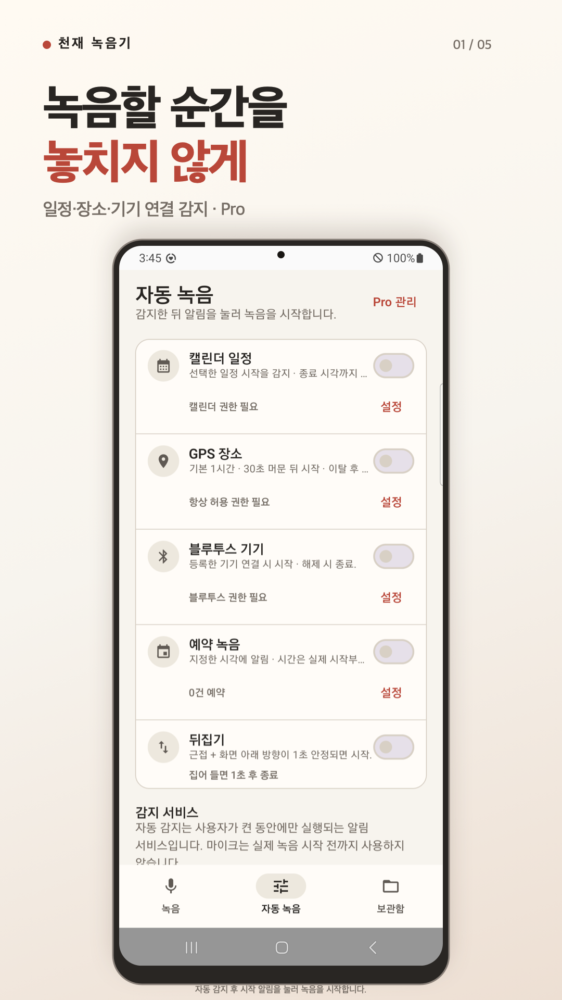
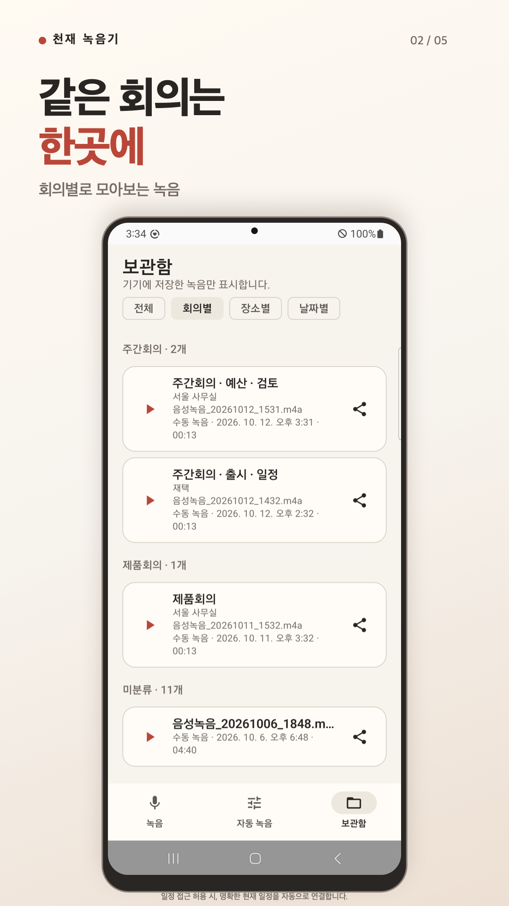
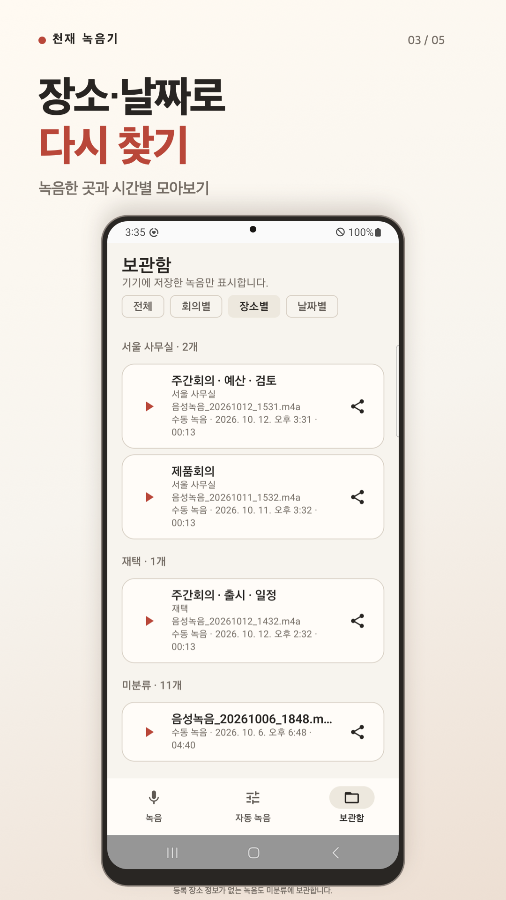

Android · iPhone
천재 녹음기
회의·장소·날짜별로 녹음을 정리하고, 필요한 순간에 직접 녹음·재생·공유하는 음성 기록 도구입니다.



회의와 장소, 날짜로 다시 찾기
회의가 끝난 뒤 필요한 녹음을 다시 찾기 쉽도록 회의별·장소별·날짜별 보관함을 제공합니다. 허용한 일정과 등록 장소의 정보가 있을 때 녹음에 맥락을 연결하고, 정보가 없는 녹음도 보관함에서 확인할 수 있습니다.
버튼으로 직접 녹음하고 저장한 파일을 재생하거나 원하는 앱으로 공유하세요. 기본 수동 녹음과 보관함은 구독 없이 사용할 수 있으며, 중요한 파일은 공유 기능으로 따로 보관할 수 있습니다.
- 수동 녹음과 기기 내 파일 보관
- 회의·장소·날짜별 녹음 정리
- 저장한 녹음 재생과 공유
- Pro의 일정·장소·예약 기반 시작 지원
녹음할 순간을 알려주는 시작 알림
Pro에서는 일정·장소·예약에 맞춰 녹음 시작 알림을 받을 수 있습니다. 알림을 직접 누르고 확인해 녹음을 시작하며, 감지 시점과 동작은 운영체제의 권한·전원 설정에 영향을 받습니다.
Android에서는 Bluetooth 연결과 뒤집기 감지도 시작 알림으로 이어집니다. 등록 장소를 벗어나거나 선택한 Bluetooth 기기의 연결이 해제되면 해당 조건으로 시작한 녹음을 종료합니다. Bluetooth는 연결 상태를 감지하며 녹음에는 휴대폰 마이크를 사용합니다.
iPhone에서 알아둘 동작 차이
iPhone의 장소 진입·이탈 감지는 iOS가 처리하므로 알림이 늦어질 수 있습니다. Bluetooth 시작 지원은 단축어로 앱을 열거나 앱이 앞에 있을 때 오디오 연결을 감지하며, 잠금 해제가 필요할 수 있습니다. 연결을 끊어도 녹음은 멈추지 않아 앱에서 직접 중지해야 합니다.
iPhone의 뒤집기 감지는 화면이 켜지고 앱이 앞에 있을 때만 사용할 수 있습니다. 화면을 아래로 향하게 놓고 가까이 1초 두면 시작하며, 집어 들거나 해당 화면을 벗어나면 종료합니다.